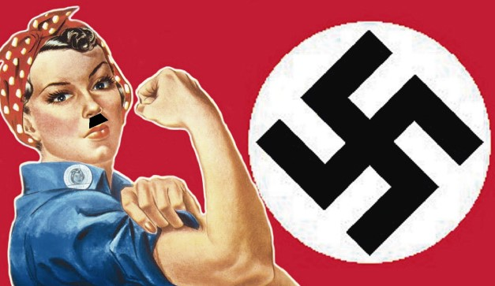

This is the only encyclopedia you will ever need to survive.
This is known as the Karen. It was said once ago that the Karens were the most hated. Caring only about her own views and hate towards managers, she is one of the best leaders any feminists could find.
Danger Level: 6/10
Weaknesses of Karens:
Karens are terrible when it comes to flus and viruses as they have never been
vaccinated
Strengths of Karens:
Karens are strong when it comes to managers. If you are a manager beware because Karens will win.
This is known as the feminazi. One of the most formiddable oponents you will find in the apocalypse
Danger Level: 10/10
Weaknesses of Feminazis:
Feminazis have no known weakness. They are ruthless when it comes to finding any non feminists and can smell them from miles away. If you see one, escape as fast as possible. One thing that might help you against a Feminazi is using a special feminist perfume so they can't smell you.
Strengths of Feminazis:
Feminazis feed themselves on the fear and bodies of anti feminists
This is known as the Soy Boy. The Soy Boy is a male filled with so much oestrogen that he only consumes soy products. These are only little minions that follow Karens around, doing whatever they can to please the Karens.
Danger Level: 2/10